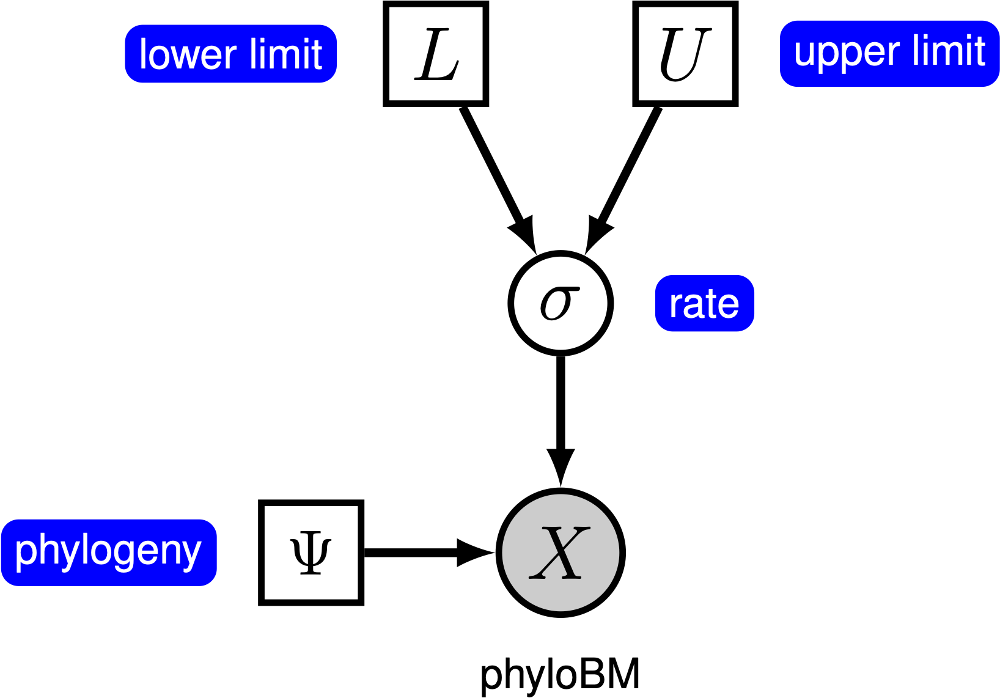
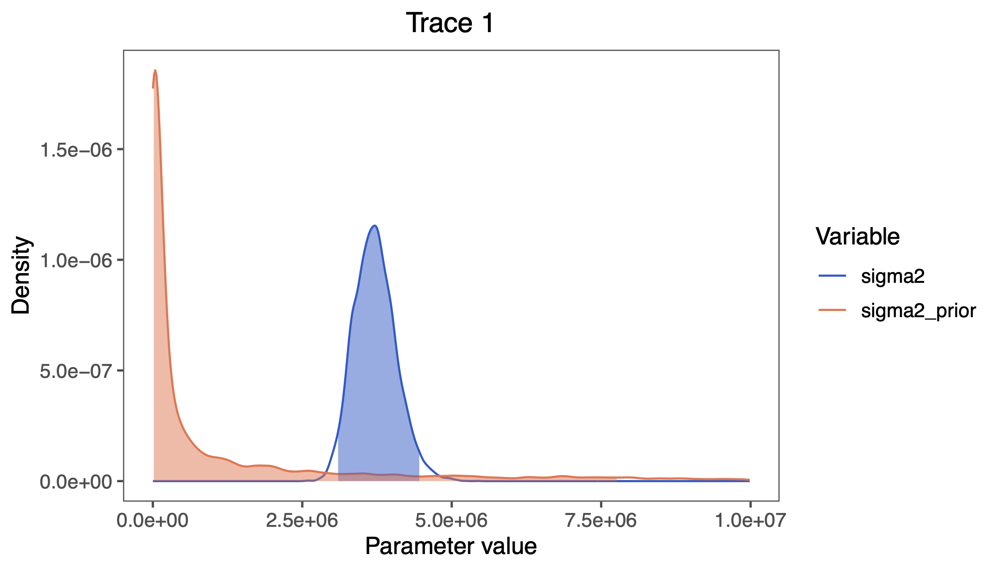

This tutorial demonstrates how to specify a Brownian-motion model where the rate of evolution is assumed to be constant among branches of a time-calibrated phylogeny (Felsenstein 1985). We provide the probabilistic graphical model representation of each component for this tutorial. After specifying the model, you will estimate the rate of Brownian-motion evolution using Markov chain Monte Carlo (MCMC).
Create a directory on your computer for this tutorial. In this directory, create a subdirectory called data, and download the data files that you can find on the left of this page.
We have taken the phylogeny from Magnuson-Ford and Otto (2012), who took it from Vos and Mooers (2006) and then randomly resolved the polytomies using the method of Kuhn et al. (2011) and the trait data from Redding et al. (2010). In the data folder, you should now have the following files:
The dataset includes:
Under the simple Brownian-motion (BM) model, the evolution of a continuous character is entirely determined by a single rate parameter, $\sigma^2$. The expected amount of change over a single branch of length $t$ is zero, and the variance in changes is $t \times \sigma^2$. We can estimate the posterior distribution of the rate parameter under this model by placing a prior on $\sigma^2$. The resulting graphical model is quite simple, as the probability of the continuous characters depends only on the phylogeny (which we assume to be known in this tutorial) and the rate parameter ().

For this exercise, we will specify a BM model, such that the rate parameter is a stochastic node, drawn from a Loguniform prior distribution, as depicted in . As we are specifying a Bayesian model, we focus on estimating the posterior distribution of the rate parameter given the continuous characters, $X$:
\[\begin{equation} P(\sigma^2 \mid X) = \frac{P(X \mid \sigma^2) P(\sigma^2)}{P(X)} \tag{Bayes Theorem}\label{eq:bayes_thereom} \end{equation}\]In this tutorial, we use the primates dataset and log-transformed female body mass.
⇨ The full BM-model specification is in the file called mcmc_BM.Rev.
We begin by deciding which of the traits to use. Here, we assume we are analyzing the first trait (female body mass), but you should feel free to choose any of the trait.
trait <- 1
Now, we read in the (time-calibrated) tree corresponding.
T <- readTrees("data/primates_tree.nex")[1]
Next, we read in the character data for the same dataset.
data <- readContinuousCharacterData("data/primates_cont_traits.nex")
We have to exclude all other traits that we are not interested in and only include our focal trait.
This can be done in RevBayes using the member methods .excludeAll() and .includeCharacter().
data.excludeAll()
data.includeCharacter( trait )
Additionally, we initialize a variable for our vector of moves and monitors:
moves = VectorMoves()
monitors = VectorMonitors()
In this tutorial, we assume the tree is known without area. We create a constant node for the tree that corresponds to the observed phylogeny.
tree <- T
The constant-rate BM model has just one parameter, $\sigma^2$. We draw the rate parameter from a loguniform prior. This prior is uniform on the log scale, which means that it is represents ignorance about the order of magnitude of the rate. However, you should be careful in specifying the boundaries for this parameter, as it strongly depends on your specific trait. If you notice that your parameters are stuck at one boundary of the prior, then come back here and modify your prior range.
sigma2 ~ dnLoguniform(1e-5, 1e-1)
In order to estimate the posterior distribution of $\sigma^2$, we must provide an MCMC proposal mechanism that operates on this node. Because $\sigma^2$ is a rate parameter, and must therefore be positive, we use a scaling move called mvScale.
moves.append( mvScale(sigma2, weight=1.0) )
Now that we have specified the parameters of the model, we can draw the character data from the corresponding phylogenetic Brownian-motion model. In this example, we use the REML algorithm to efficiently compute the likelihood (Felsenstein 1985). We provide the square root of the variance parameter, $\sigma$, to dnPhyloBrownianREML:
X ~ dnPhyloBrownianREML(tree, branchRates=sqrt(sigma2) )
Noting that $X$ is the observed data (), we clamp the data to this stochastic node.
X.clamp(data)
Finally, we create a workspace object for the entire model with model(). Remeber that workspace objects are initialized with the = operator, and are not themselves part of the Bayesian graphical model. The model() function traverses the entire model graph and finds all the nodes in the model that we specified. This object provides a convenient way to refer to the whole model object, rather than just a single DAG node.
mymodel = model(sigma2)
For our MCMC analysis, we need to set up a vector of monitors to record the states of our Markov chain. The monitor functions are all called mn*, where * is the wildcard representing the monitor type. First, we will initialize the model monitor using the mnModel function. This creates a new monitor variable that will output the states for all model parameters when passed into a MCMC function.
monitors.append( mnModel(filename="output/simple_BM.log", printgen=10) )
Additionally, create a screen monitor that will report the states of
specified variables to the screen with mnScreen:
monitors.append( mnScreen(printgen=1000, sigma2) )
With a fully specified model, a set of monitors, and a set of moves, we
can now set up the MCMC algorithm that will sample parameter values in
proportion to their posterior probability. The mcmc() function will
create our MCMC object:
mymcmc = mcmc(mymodel, monitors, moves, nruns=2, combine="mixed")
Now, run the MCMC:
mymcmc.run(generations=50000)
When the analysis is complete, you will have the monitored files in your output directory.
⇨ The Rev file for performing this analysis: mcmc_BM.Rev
sigma2).scripts/mcmc_BM_prior.Rev).RevGadgets:First, we need to load the R package RevGadgets
library(RevGadgets)
Next, read in the MCMC output from the posterior and the prior:
simple_BM_posterior <- readTrace("output/simple_BM.log")[[1]]
simple_BM_prior <- readTrace("output/simple_BM_prior.log")[[1]]
Next, add the samples of sigma2 from the prior to the posterior (and rename them to sigma2_prior):
simple_BM_posterior$sigma2_prior <- simple_BM_prior$sigma2
Finally, we plot the prior and posterior distributions:
plotTrace(list(simple_BM_posterior), vars=c("sigma2", "sigma2_prior"))

sigma2 visualized in RevGadgets.You can also find all these commands in the file called plot_BM.R which you can run as a script in R.
Click below to begin the next exercise!